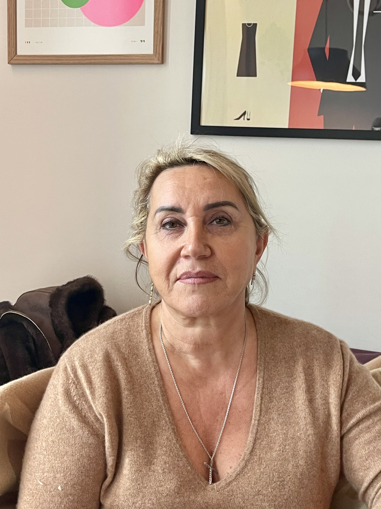
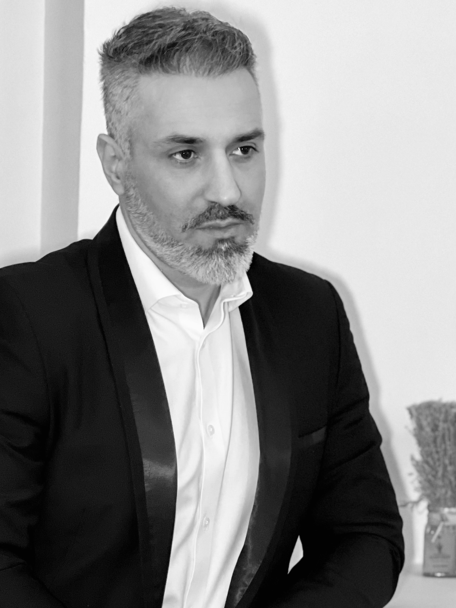
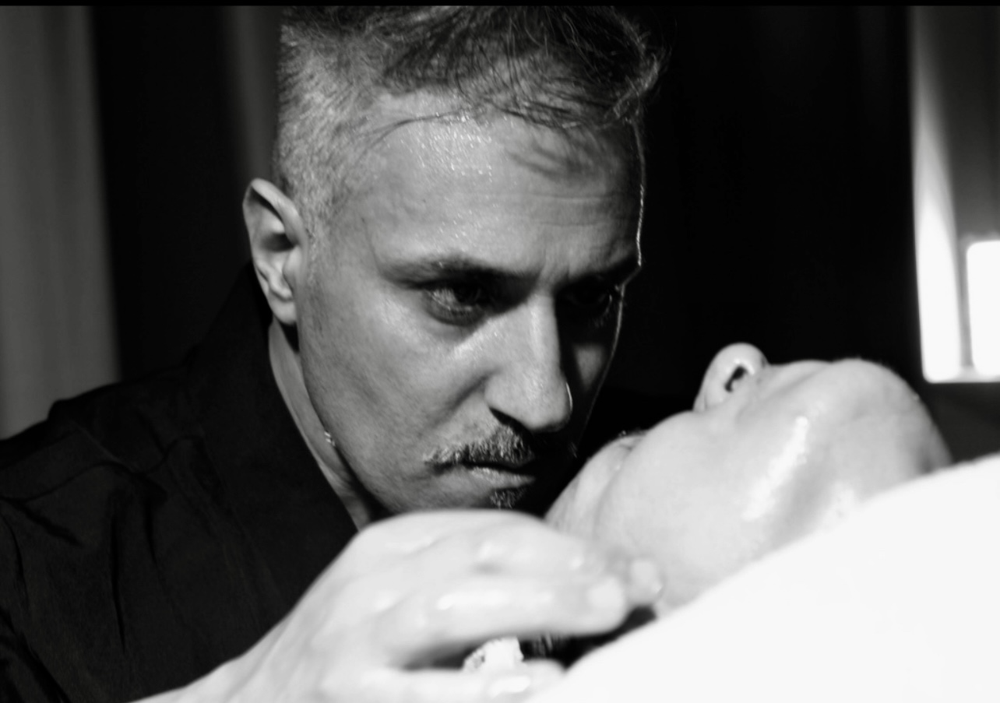
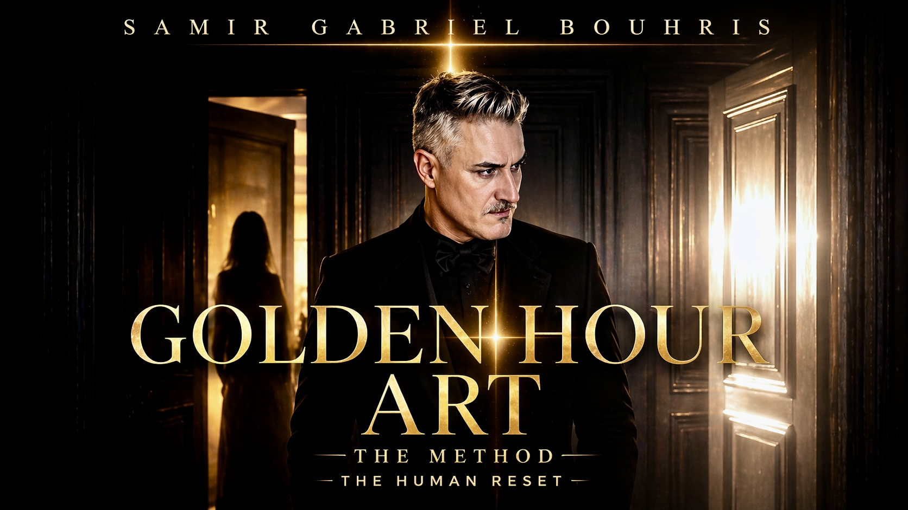

Avant
Après
GOLDEN HOUR ART BY SAMIR GABRIEL
RÉSULTATS PHYSIQUES ET ESTHÉTIQUES APRÈS 4 ANNÉES ET 3 RENCONTRES


À propos
Parcours & Expertise
Découvrez Samir Gabriel Bouhris, visionnaire Franco-Algérien dont le parcours singulier s'inscrit dans une quête profonde et constante : comprendre, ressentir et révéler l'essence même du corps humain.
Né en France, il développe dès son plus jeune âge une fascination pour les sciences humaines, animé par un émerveillement instinctif face aux mystères du vivant. Très tôt, il ressent que le corps humain ne se limite pas à une structure mécanique, qu'il est le reflet d'interactions complexes entre le physique, l'émotionnel et l'invisible.
Guidé par cette intuition, il s'engage dans une voie exigeante et devient en 1999 expert en Podologie et Orthopédie. Il y affine une lecture précise de la marche humaine, de l'Orthostatisme et des dynamiques posturales. Rapidement, il se distingue par la finesse de ses analyses, collaborant étroitement avec des médecins qui sollicitent son expertise pour des évaluations approfondies de la statique et du mouvement.
Mais cette compréhension du corps ne lui suffit pas.
En 2012, il devient Ostéopathe et franchit une nouvelle étape dans sa pratique. Son toucher, à la fois précis et intuitif, marque profondément les patients qu'il accompagne : des enfants aux sportifs de haut niveau, notamment dans le football de Ligue 1, mais aussi dans des disciplines exigeantes comme la boxe anglaise, le MMA, ou les Arts Martiaux, qu'il pratique lui-même depuis son plus jeune âge.
Progressivement, son exploration du corps humain l'amène à dépasser les approches purement mécaniques pour plonger dans des dimensions plus subtiles, mais pourtant bien réelles : celles de l'âme, de l'esprit et des mémoires inscrites dans le corps.
C'est dans cette continuité qu'il intègre une formation en ergonomie à la Faculté de Médecine d'Angers, sous l'enseignement du professeur Yves Roquelaure, référence internationale en santé au travail et en épidémiologie des troubles musculo-squelettiques. Cette formation marque un tournant majeur dans son parcours.
Elle lui permet de développer une approche profondément transversale, à la croisée des sciences médicales, de la biomécanique et de la psychologie. Il acquiert une capacité rare : analyser l'humain dans sa globalité, comprendre les interactions entre le corps, le mental et l'environnement, et décrypter les mécanismes d'adaptation souvent inconscients qui influencent les comportements et les états internes.
À travers l'étude des gestes, des postures, de la charge mentale, du stress et des dynamiques organisationnelles, il construit une vision systémique du fonctionnement humain, fondée sur la rigueur scientifique et l'observation du réel.
En parallèle, il développe des compétences solides en psychologie appliquée, lui permettant de saisir avec finesse les processus cognitifs, émotionnels et comportementaux. Cette double lecture corporelle et psychique devient un pilier central de son approche.
Toujours en quête de compréhension globale, il s'ouvre également à des dimensions plus expérientielles du vivant. À travers un travail intensif sur la concentration, la qualité de présence et la relation à l'autre, il explore et développe des phénomènes tels que le magnétisme, la symbiose relationnelle, la puissance et l'énergie du regard et la projection somatique.
Parallèlement, il s'ouvre à des savoirs ancestraux, notamment à travers la cupping therapy, dont il explore en profondeur les mécanismes et les effets, jusqu'à en maîtriser les subtilités. Il développe également un toucher singulier en Massothérapie, reconnu pour sa précision et sa capacité à induire des transformations profondes.
De cette convergence entre sciences modernes et traditions anciennes, entre rigueur et intuition, naît une approche unique et singulière.
Une approche où l'analyse devient perception. Où le corps devient langage. Et où chaque interaction ouvre la voie à une transformation profonde.
Plus qu'un parcours, il s'agit d'une trajectoire : celle d'un Homme ayant choisi d'explorer les fondements invisibles de l'équilibre humain, pour en révéler toute la puissance.
Résultats & Témoignages

Présentation du protocole breveté en action.


Une transformation visible le jour même! . Mon corps semblait remodelé, mes jambes légères comme jamais et mon visage incroyablement jeune . C'est une expérience hors du commun.
Samir Gabriel a une sensibilité unique et un charisme incroyable . Il lis en vous et se connecte à vous c'est bluffant!. Les résultats sont immédiats et évolutifs dans le temps avec une seule rencontre, c'est une véritable expérience .
La méthode Golden Hour est dans une catégorie à part. Je n'aurais jamais cru qu'une seule rencontre puisse changer autant de choses, physiquement et mentalement. J'ai hâte de le revoir et revivre cela.
Vision & Philosophie
GOLDEN HOUR ART est un art vivant fondé sur l'expression la plus pure des capacités naturelles humaines.
Il s'agit d'une méthode multidimensionnelle développée à partir de plus de vingt années d'expérience et de recherches.
Cet art repose sur l'orchestration précise du corps, de l'émotion, de l'intention et du mouvement. Chaque geste est pensé comme une note dans une partition où le corps devient instrument et langage.
L'intensité, la précision et la présence permettent d'atteindre un état de transformation en un temps très court. En une heure, un processus profond de rééquilibrage global peut être initié.
Ce processus agit simultanément sur les dimensions psychologiques, émotionnelles, comportementales et physiques. Le visage, miroir de l'âme et du vécu, devient le révélateur visible de cette transformation.
GOLDEN HOUR ART ne masque pas, il révèle. Il ne modifie pas artificiellement, il réactive des mécanismes naturels souvent oubliés.
Cette méthode s'appuie sur une compréhension fine des interactions entre le corps, le cerveau et les émotions. Elle s'inscrit à la croisée de plusieurs champs tels que les neurosciences, la psychosomatique et les sciences de la perception.
L'émotion y est centrale, à la fois vecteur, déclencheur et amplificateur du changement. Le travail repose sur une connexion subtile entre le praticien et la personne accompagnée, permettant une transmission d'informations, de rythmes et d'intentions.
Le corps retrouve alors sa capacité naturelle d'adaptation, d'autorégulation et de régénération. Les effets sont immédiats, mais surtout évolutifs dans le temps.
GOLDEN HOUR ART vise un réalignement profond entre l'image perçue, le ressenti intérieur et l'identité réelle. Il s'agit d'un processus de révélation, de réappropriation et de transformation de soi — à la fois un art, une méthode et une expérience qui ouvre un nouveau regard sur le potentiel humain.
Avant de toucher, Samir observe. Il lit le corps, décode les tensions, comprend l'histoire que la peau raconte. Le diagnostic précède toujours le soin.
Chaque manœuvre de la méthode Golden Hour est brevetée car elle est unique. La pression, le rythme, l'angle — tout est codifié pour maximiser l'effet en un minimum de temps.
Le résultat ne se limite pas au corps. Chaque séance Golden Hour libère aussi le mental, redonne de l'énergie, replace l'individu dans un état de pleine puissance.
"Le corps ne ment jamais. Il attend simplement qu'on lui accorde cette heure dorée."— Samir Gabriel Bouhris
Méthode & Résultats
Golden Hour Art est un art unique fondé sur l'expression des capacités naturelles humaines, permettant d'obtenir des résultats visibles, perceptibles et souvent spectaculaires en un temps très court. Développé par Samir Gabriel Bouhris — Ostéopathe, Podologue et Ergonome, investi depuis plus de vingt-cinq années dans les domaines du corps, de la posture, de l'esthétique et des sciences humaines — cet art s'inscrit dans une approche globale de l'être humain, sans jamais se substituer aux pratiques médicales conventionnelles.
En une seule rencontre, Golden Hour Art peut initier un véritable processus de rééquilibrage profond : physique, esthétique, émotionnel et comportemental. Ce processus, souvent décrit comme un Reset, se manifeste par une sensation immédiate de légèreté, d'alignement et de clarté cognitive profonde. Les effets observés sont à la fois instantanés et évolutifs dans le temps. Dans de nombreux cas, ce rééquilibrage s'accompagne d'une diminution significative des tensions corporelles, d'un relâchement global et d'un mieux-être perceptible dans la vie quotidienne.
Les transformations peuvent être observées directement sur le visage, la posture, la dynamique corporelle et l'expression globale — physique et psychologique. Le visage, véritable miroir intérieur, révèle alors un relâchement des tensions, un éclaircissement du regard, une redéfinition des volumes, un effet naturel de lifting, une amélioration du grain de peau et une harmonie globale des traits, quel que soit l'âge. Une impression de rajeunissement immédiat et évolutif est observée. Ces changements sont naturels, non invasifs et sans modification artificielle.
Le corps retrouve progressivement ses capacités naturelles d'adaptation et d'équilibre. Les personnes accompagnées rapportent une mobilité retrouvée, une diminution des tensions corporelles, une meilleure perception de leur posture, une fluidité dans les mouvements et une sensation globale de bien-être physique. Les personnes peuvent également observer une meilleure énergie, un sommeil amélioré, une relation plus équilibrée à l'alimentation et une évolution de leur silhouette.
Golden Hour Art favorise un relâchement profond, un apaisement intérieur, une prise de recul et une meilleure compréhension de soi. La plupart des blocages inconscients empêchant une évolution — avec un impact non négligeable sur la vie réelle personnelle et professionnelle — sont levés immédiatement pour certains et progressivement pour d'autres. Les transformations influencent également la confiance, la présence et la prise de décision.
Des effets peuvent être observés immédiatement, à 24 heures, à 72 heures, et ainsi de suite au fil des jours et des semaines — sur plusieurs mois, voire sur des années. Toutes les photos et vidéos sont réelles, non retouchées, dont les impacts sur la vie réelle — personnelle et professionnelle — sont indéniables, ainsi que sur la santé et la beauté en général.
Chaque rencontre s'inscrit dans un cadre professionnel rigoureux et structuré, garantissant une prise en charge personnalisée et adaptée à chaque personne. Elle nécessite une anamnèse approfondie, une observation psychologique, une lecture corporelle et posturale, une analyse fine du visage. Une attention particulière est portée sur les souhaits de transformation et d'évolution exprimés par la personne. La rencontre est adaptée en temps réel, dans une approche sur-mesure. Un suivi est proposé à l'issue de cette expérience, permettant d'évaluer les évolutions observées et, si nécessaire, d'envisager une nouvelle rencontre ou un rappel dans le temps.
Chaque Rencontre est unique, pensée comme une expérience sur mesure où l'écoute, l'analyse et la précision du geste se rejoignent pour révéler le plein potentiel de transformation.
Pour qui ?
GOLDEN HOUR ART s'adresse à toute personne, quels que soient son âge, sa profession ou sa situation personnelle et professionnelle.
Il accompagne celles et ceux qui ressentent le besoin de se réaligner, de retrouver un équilibre physique, émotionnel et mental, d'initier un changement de vie ou de se libérer d'un vécu devenu trop présent.
Dans une approche globale de l'être humain, GOLDEN HOUR ART s'inscrit comme un accompagnement complémentaire pouvant soutenir la prise en charge de nombreux déséquilibres du quotidien, notamment en lien avec les tensions corporelles, les inconforts musculo-squelettiques, les états de stress, de fatigue ou certaines difficultés émotionnelles et psychologiques.
Cette méthode ne se substitue en aucun cas aux traitements médicaux, qu'ils soient médicamenteux ou autres, mais vise à accompagner et à optimiser les dynamiques naturelles du corps.
Au fil des accompagnements, il a été observé que de nombreuses situations — douleurs chroniques, signes de vieillissement du visage et du corps, états de fatigue ou déséquilibres émotionnels — connaissent des évolutions significatives, parfois rapides et visibles.
Ces évolutions se manifestent de manière multidimensionnelle, traduisant une amélioration globale de l'état physique et psychologique.
GOLDEN HOUR ART répond très favorablement aux demandes esthétiques du visage, en favorisant un rajeunissement naturel, immédiat et évolutif, quel que soit l'âge.
Cette approche peut être perçue comme une alternative naturelle aux pratiques de médecine esthétique ou chirurgicale, tout en pouvant également s'inscrire en complément de celles-ci.
GOLDEN HOUR ART et son fondateur ne portent aucun jugement sur ces pratiques ni sur les professionnels qui les exercent. Chaque personne demeure libre, en toute conscience éclairée, de ses choix et orientations.
Sur le plan corporel, il est fréquemment observé une évolution de la silhouette, pouvant inclure :
À l'inverse, un rééquilibrage peut également être constaté chez les personnes présentant une insuffisance pondérale.
Ces observations sont issues de retours d'expérience et n'ont pas fait l'objet de validations scientifiques strictes. Cependant, leur récurrence invite à leur accorder une attention particulière.
GOLDEN HOUR ART — The Method — est le fruit de plus de vingt années d'études et de pratiques issues de disciplines telles que l'ostéopathie, la podologie, l'ergonomie, la massothérapie, la cupping therapy et l'étude des interactions humaines.
Certaines de ces disciplines sont reconnues dans les approches complémentaires étudiées à l'échelle internationale, notamment par des institutions comme l'OMS.
Cette approche favorise une dynamique naturelle d'homéostasie, contribuant à un rééquilibrage global du corps.
Accessible à tous, GOLDEN HOUR ART trouve également une résonance particulière auprès de profils à haute exigence :
Dans ces contextes, les effets observés peuvent influencer la performance, la gestion du stress, la présence et l'expression.
GOLDEN HOUR ART est un art universel dans son accès, mais profondément exigeant dans son incarnation.
Prise de Rendez-vous
Chaque rencontre commence par une connaissance de vous. Ce formulaire confidentiel permet à Samir de préparer votre séance avec toute l'attention qu'elle mérite.
Masterclass & Transmission
GOLDEN HOUR ART " The Method " ouvre une voie exigeante, rare et profondément humaine. À celles et ceux qui, à travers le Monde se sentent capables de ressentir, comprendre et incarner la profondeur du geste, de l'émotion, de la présence, et de l'excellence thérapeutique — pourront devenir les ambassadeurs de cet Art Unique au Monde.